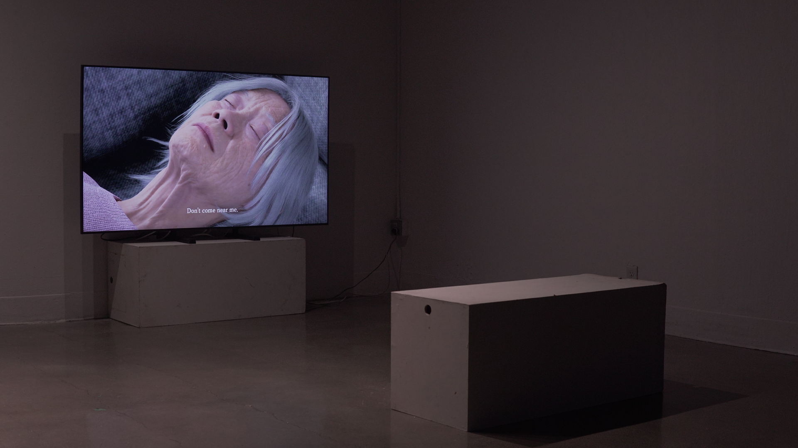
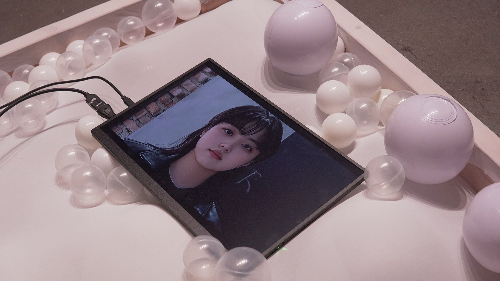
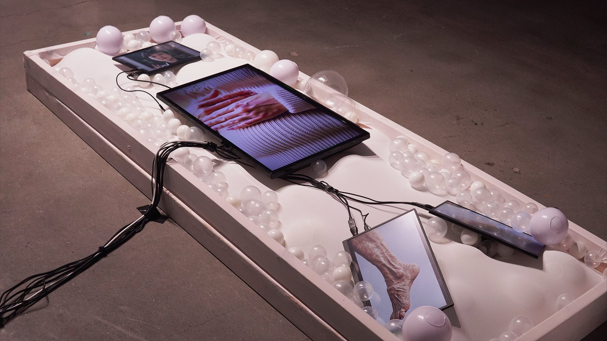
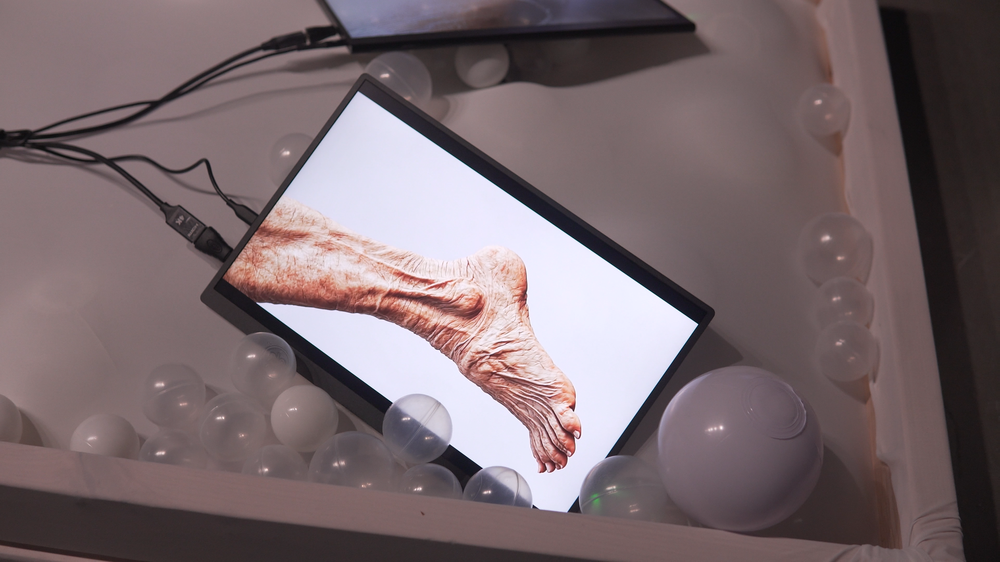

Reverse the normal hierarchy
Instead of inviting AI to assist a human director, I placed it in the director's role and asked humans to follow its creative instructions.
A film and installation built from the filmmaker's own face and voice, transformed into fictional family members. Generative technology becomes the mechanism of the story's identity and inheritance.
What if an artificial intelligence directed a film—and the humans made it exactly as instructed? Directed By AI began as an experiment in reversing a familiar relationship. Generative AI is usually introduced as a tool to help a human director write, storyboard, or edit. I wanted to invert that hierarchy: give the system responsibility for narrative, camera direction, and editorial choices, and place myself and the human collaborators in the role of a production crew responding to those choices.
The experiment asks whether the title of 'director' refers to who physically holds the camera or to who decides what is filmed, how, and in what order. A model cannot operate a production by itself, but it can issue written creative decisions that a human team interprets and carries out. This created a productive tension between a system that could prescribe images and people who had to make them possible.
The finished film and installation also used my own facial and vocal material to construct fictional family characters, including a mother and sister. Their story centers on inherited illness, fear, and estrangement. That material gave the directorial role reversal a narrative to work on, while diffusion-based character development and voice transformation expanded the experiment into representation itself.
The emphasis of the project was not AI producing polished imagery with one button. It was a deliberately reconfigured filmmaking workflow in which the model occupied the decision-making position normally held by a human director, while human performers and makers translated instructions into scenes, media and edited presentation.
The audience sees a dramatic film about a fictional family. Nothing on screen needs to resemble a conventional software demo. The structure behind the images, however, is unusual: story direction, camera choices, and editing decisions were assigned to AI as part of the experiment.
The encounter has a second dimension in the installation. The mother's and sister's moving portraits are synthesized from the filmmaker's own facial information, while altered vocal performances give those figures different voices. A viewer may take them as distinct fictional people without immediately recognizing the shared source material.
That doubleness is intentional. The film tells a story of inherited identity while its production process transforms one person's identity into several roles. AI influences both the decisions behind the camera and the representational material in front of it.
The viewer sees the resulting film; the portfolio reveals the production rule that generated it. The contrast matters because a finished shot rarely tells us who—or what—was allowed to make its creative decisions.
Begin with a role-reversal hypothesis: give AI authority over cinematic instructions instead of limiting it to supporting a human director.
Treat AI as the source of creative direction and human collaborators as the crew who translate that direction into achievable production steps.
Build the fictional family's conflict around a mother's fear of transmitting illness and the emotional distance within the family.
Use a language-model process to propose and guide story, relationships and dialogue under the AI-director rule.
Treat generated decisions about scene, framing or presentation as directions that humans must interpret concretely rather than as completed images.
Have the human crew carry out camera-related direction within the constraints of available performers, space, equipment and material.
Examine the gap between an instruction's language and the choices needed to carry it out. Humans still make practical interpretations even when they relinquish the director title.
Use facial source material and diffusion-based variation to construct the fictional mother and sister as mediated visual figures.
Transform recordings of the filmmaker's voice to perform the dialogue in the constructed family.
Prepare synthetic character footage for an installation alongside the cinematic production.
Use AI-generated direction for choices concerning the structure, order and editing of the resulting film rather than only for the initial story.
Convert model recommendations into actual filmed and edited material, confronting ambiguity when an instruction is impractical or unclear.
Bring scenes, sound, generated images and the prescribed editorial structure into a finished viewing experience.
Ask whether a director is the issuer of creative instructions, the person who executes them, or the person who designs the rule assigning those roles.
The AI-director role is an authored procedural rule. It does not mean an AI model physically operated cameras or independently edited a film without human execution.
Creative instructions and editorial recommendations supply direction for the experiment.
The crew turns text decisions into practicable actions, produced footage and a finished film.
This is an experiment in creative authority implemented through a filmmaking workflow. The key interface is the translation of model-generated direction into human production actions. A natural-language instruction can specify a narrative or visual intention, but an actual shot requires people, tools, staging, timing and judgment. Rather than hiding that translation, I made it central to the project's premise.
The system was used to direct decisions in three domains: story development, camera direction and editing. The human team followed those instructions as production personnel. The real process cannot be reduced to a claim that AI autonomously operated a camera or a full editing suite. The AI issued guidance; people executed the physical and editorial work.
The generative character pipeline ran alongside the directorial workflow. Facial images from my own source data were used to construct different family members through diffusion-based generation. Voice transformation made it possible to perform distinct family roles from related vocal material, bringing synthetic imagery and sound into the narrative.
Those two experiments reinforce one another. Giving AI the director's seat questions who has authority over the film's form; generating multiple relatives from one source body questions who is represented by its images. The result is a film that asks about authorship both in its production process and in its fictional family.
An AI-generated instruction is not automatically an authored shot. The project's real craft lies in designing a rule for creative decision-making, keeping the human crew able to carry out that rule, and assembling a final work whose formal decisions make the experiment perceptible. It is a film experiment, not proof that the AI possessed intentions, trained itself as a filmmaker, or independently operated production equipment.
Instead of inviting AI to assist a human director, I placed it in the director's role and asked humans to follow its creative instructions.
If only dialogue came from a model, the filmmaking process would remain conventionally human-directed. Camera and editorial choices extend the experiment into cinematic form.
Even a detailed generated instruction needs physical interpretation. That gap exposes the labor embedded in the idea of automated creativity.
The mother's fear of inherited illness makes the experiment more than a formal trick; the family story carries emotional stakes independent of the production method.
Using one person's face and voice for distinct relatives questions the status of representation as well as the authorship of its arrangement.
AI played the director's designated creative role within a designed workflow. Humans executed, translated, produced and delivered the work.
Original stills accompanying the video and case-study workflow.




Directed By AI is a prototype of a different production relationship. It investigates what happens when story, camera and editorial decisions are delegated to a model, and what remains irreducibly human in interpreting and realizing those decisions. The fictional family made from the filmmaker's own source data extends the question into identity and representation. The work does not claim an autonomous robot director or experimental evidence about audience psychology.